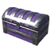
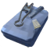

Pesci e varie
Pesci e varie in Valheim – 33 oggetti con bioma, provenienza, strumento necessario, ricetta e utilizzo.
Nessun oggetto trovato.
 Anelli per botti
Anelli per botti
Questi anelli di metallo sono perfettamente rotondi, ideali per tenere insieme le assi delle botti. Basta aggiungere del legno!
Come ottenerlo
- Comprare: Haldor · 100 monete (× 3)
Utilizzo
- Materiale da costruzione per: Botte
 Aringa gigante
Aringa gigante
Se fermentato, questo pesce puzza più della palude da cui viene.
Come ottenerlo
- Pesca: Palude · Esca: Esca appiccicosa
Utilizzo
- Ingrediente per: Cappello da pesca, Pesce crudo
 Campana
Campana
Per chi suona questa campana?
Come ottenerlo
- Fabbricare: Forgia nera da 3 ×
 Frammento di campana
Frammento di campana
Utilizzo
- Evoca il boss: Fader (3 ×)
 Cernia
Cernia
Si sposa bene con un bel po' di carboidrati!
Come ottenerlo
- Pesca: Pianure · Esca: Esca pungente
Utilizzo
- Ingrediente per: Base per idromele: antipuntura, Cappello da pesca, Pesce crudo
 Cernia dei coralli
Cernia dei coralli
Ha visto cose... Cose inquietanti...
Come ottenerlo
- Pesca: Oceano · Esca: Esca pesante
Utilizzo
- Ingrediente per: Cappello da pesca, Pesce crudo
 Chiave della cripta
Chiave della cripta
Parzialmente coperta di fango incrostato, ha un odore di fetido.
Come ottenerlo
- Lasciato da: L' Antico · Foresta Nera
 Chiave intricata
Chiave intricata
Se c'è una chiave, allora ci deve essere sicuramente una serratura.
Come ottenerlo
- Lasciato da: Hexen · Praterie, Foresta Nera, Palude, Montagna, Pianure, Lande Nebbiose, Lande desolate, Alto nord, Oceano · 10 % di probabilità
- Cuocere: Fonderia del gelo da
 Colata: Chiave intricata
Colata: Chiave intricata
 Farina d'avena
Farina d'avena
Avena macinata finemente, con un grande potenziale.
Come ottenerlo
- Lavorare: Mulino da
 Avena
Avena
Utilizzo
- Ingrediente per: Carne nel pane, Colazione del nord, Pancake, Pastella per pancake, Pateitr cruda
 Farina di orzo
Farina di orzo
Ottimo ingrediente per il pane.
Come ottenerlo
- Lavorare: Mulino da
 Orzo
Orzo
Utilizzo

Forziere d'argento di HildirAppartiene a Hildir. Se trovato, si prega di restituirlo.
Come ottenerlo
- Lasciato da: Geirrhafa · Montagna
 Forziere d'ottone di Hildir
Forziere d'ottone di Hildir
Appartiene a Hildir. Se trovato, si prega di restituirlo.
Come ottenerlo
- Lasciato da: Brenna · Foresta Nera

Kit da barbiereUn kit per i migliori barbieri.
Come ottenerlo
- Comprare: Hildir · 600 monete
Utilizzo
- Materiale da costruzione per: Barbiere
 Lacrima del drago
Lacrima del drago
Le ultime lacrime congelate di un drago, pulsanti con energia misteriosa.
Come ottenerlo
- Lasciato da: Moder · Montagna · 10 ×
Utilizzo
- Materiale da costruzione per: Tavolo da artigiano
 Luccio
Luccio
Pesce d'acqua dolce che richiede molto condimento.
Come ottenerlo
- Pesca: Praterie, Foresta Nera, Pianure · Esca: Esca da pesca
Utilizzo
- Ingrediente per: Cappello da pesca, Pesce crudo
 Luccio
Luccio
La lampada appesa al soffitto fa vedere più facilmente quel faccino!
Come ottenerlo
- Pesca: Lande Nebbiose · Esca: Esca da acque torbide
Utilizzo
- Ingrediente per: Cappello da pesca, Pane e pesce crudi, Pesce crudo
 Manico di falce
Manico di falce
Un'ottima base resistente per un attrezzo.
Come ottenerlo
- Comprare: La strega della palude · 200 monete · dopo aver sconfitto Moder
Utilizzo
- Ingrediente per: Falce
 Pesce lava
Pesce lava
Si dice che questo pesce deponga le uova direttamente nella lava!
Come ottenerlo
- Pesca: Lande desolate · Esca: Esca da acque calde
Utilizzo
- Ingrediente per: Cappello da pesca, Pesce crudo
 Pesce palla
Pesce palla
Gustoso se cucinato nel modo giusto, ma con un sapore un po' pungente.
Come ottenerlo
- Pesca: Lande Nebbiose, Oceano · Esca: Esca da acque torbide
Utilizzo
- Ingrediente per: Cappello da pesca, Pesce crudo
 Pesce persico
Pesce persico
Gustoso pesce bianco.
Come ottenerlo
- Pesca: Praterie, Foresta Nera, Pianure · Esca: Esca da pesca
Utilizzo
- Ingrediente per: Base per idromele: Vananidir, Cappello da pesca, Pesce crudo
 Pesce troll
Pesce troll
Questo pesce è l'elemento di disturbo dei ruscelli locali.
Come ottenerlo
- Pesca: Foresta Nera · Esca: Esca muschiata
Utilizzo
- Ingrediente per: Base idromele: resistenza del troll, Cappello da pesca, Pesce crudo
 Rompisigilli
Rompisigilli
Un oggetto utilizzato per rompere sigilli dvergr.
Come ottenerlo
- Fabbricare: Tavolo galdr da 9 ×
 Frammento di rompisigilli
Frammento di rompisigilli
 Salmone dell'Atlantico
Salmone dell'Atlantico
Questo pesce ha una preferenza per l'acqua ghiacciata.
Come ottenerlo
- Pesca: Alto nord · Esca: Esca ghiacciata
Utilizzo
- Ingrediente per: Cappello da pesca, Pesce crudo
 Sella di cenerale
Sella di cenerale
Il dorso di un cenerale è abbastanza nodoso, quindi avrai bisogno di una sella per cavalcarne uno.
Come ottenerlo
- Fabbricare: Forgia nera (livello 2) da 6 ×
 Fiammetal, 20 ×
Fiammetal, 20 ×  Filo di lino, 4 ×
Filo di lino, 4 ×  Tendine di Morgen
Tendine di Morgen
 Sella per alce
Sella per alce
L'alce è un animale maestoso, ma con una sella così bella potrebbe lasciarsi cavalcare anche da un cavaliere.
Come ottenerlo
- Fabbricare: Forgia nera (livello 2) da 4 ×
 Orosangue, 5 ×
Orosangue, 5 ×  Pelliccia di foca, 5 ×
Pelliccia di foca, 5 ×  Legna da costruzione, 15 × Filo di lino
Legna da costruzione, 15 × Filo di lino
 Sella per Lox
Sella per Lox
Usala con un Lox per poterlo cavalcare.
Come ottenerlo
- Fabbricare: Banco di lavoro da 10 ×
 Ritagli di cuoio, 20 × Filo di lino, 15 ×
Ritagli di cuoio, 20 × Filo di lino, 15 ×  Metallo nero
Metallo nero
 Seme antico
Seme antico
Se lo tieni contro l'orecchio, senti piccoli sussurri al suo interno ...
Come ottenerlo
- Lasciato da: Nano grigio spietato · Foresta Nera · 33 % di probabilità
- Distruggere: Nido dei nani grigi
Utilizzo
- Ingrediente per: Cuore della foresta
- Evoca il boss: L' Antico (3 ×)
 Spirito tormentato
Spirito tormentato
Ciò che rimane di Yagluth, uno spirito tormentato a cavallo tra questo mondo e quello successivo.
Come ottenerlo
- Lasciato da: Yagluth · Pianure · 3 ×
Utilizzo
- Materiale da costruzione per: Fontana del fuoco fatuo
 Tetra
Tetra
Trascorre tutta la sua vita al buio e non ha bisogno degli occhi.
Come ottenerlo
- Pesca: Montagna · Missione di Hildir: Caverna ululante, Grotta del gelo · Esca: Esca da acque fredde
Utilizzo
- Ingrediente per: Cappello da pesca, Pesce crudo
 Tonno
Tonno
L'equivalente marino del pollo...
Come ottenerlo
- Pesca: Oceano · Esca: Esca pesante
Utilizzo
- Ingrediente per: Cappello da pesca, Pesce crudo
 Totem dei Fuling
Totem dei Fuling
Canalizza l'antico potere di Yagluth.
Come ottenerlo
- Lasciato da: Berserker Fuling · Pianure · 10 % di probabilità
- Forzieri: Stonehenge · 8,1 % di probabilità
- Raccogliere: Torre di pietra (Montagne), Villaggio fuling
Utilizzo
- Evoca il boss: Yagluth (3 ×)
 Uovo
Uovo
Tienilo al caldo per scoprire cosa contiene... Ma chi è nato prima?
Come ottenerlo
- Comprare: Haldor · 1500 monete · dopo aver sconfitto Yagluth
- Forzieri: Missione di Hildir: Torre sigillata · 55 % di probabilità
Utilizzo
- Ingrediente per: Omelette ai funghi, Pancake, Pane dolce non cotto, Uovo cotto
 Uovo di avvulctoio
Uovo di avvulctoio
Caldo al tatto e ricco di proteine.
Come ottenerlo
- Lasciato da: Avvulctoio · Lande desolate · 1–2 × · 50 % di probabilità
- Raccogliere: Nido di avvoltoio
Utilizzo
- Ingrediente per: Crostata arrosto non ancora cotta
 Uovo di drago
Uovo di drago
Molto più pesante di quanto sembri, un debole mormorio è udibile dall'interno.
Come ottenerlo
- Raccogliere: Nido di drago (uovo)